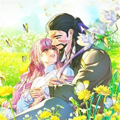

재활용 머학생 같은 웹툰 추천

재활용 머학생 · 수레기
재활용 머학생 재밌게 봤다면 이 웹툰들도 좋아할 거예요. 같은 장르이면서 청춘, 미스터리, 개그 같은 요소가 겹치는 작품을, 겹치는 요소가 많은 순서로 20개 골랐어요.
2026-10-02 기준 · 네이버웹툰·카카오웹툰·레진코믹스 · 성인 작품 제외
내 취향으로 직접 골라 추천받기 →-
1
 네이버웹툰
네이버웹툰성북구 비둘기 이헌서
하루 아침에 비둘기가 되어버린 대학생 '이헌서'(여/24) 다시 인간으로 돌아갈 방법을 찾지 못한 헌서는 당분간 같은 동네 남사친 '반휘혈'의 집에 머물며 비둘기 생활을 이어나가게 되는데... 어떤가요 이헌서양, 비둘기 생활 재미있나요?
청춘개그일상·개그네이버웹툰에서 보기 → -
2
 카카오웹툰
카카오웹툰말단 공무원은 출세가 하고 싶어서
제국의 황실 공무원이자, 답 없는 부서의 말단 공무원인 나미아 로아피. 어느 날 자신이 책 속에 환생했음을 깨닫고, 황태자가 암살당하고 제국 전쟁이 펼쳐지는 암울한 미래를 알게 된다. 전쟁에 휘말리게 되면 자신 같은 엑스트라는 죽게 되는 건 당연한…
미스터리개그스릴러·공포일상·개그카카오웹툰에서 보기 → -
3
 카카오웹툰
카카오웹툰나 혼자 부활한다
『고유능력: 부활』 “뭐지? 이 개사기 개꿀 먼치킨 스킬은?” 하지만 강현은 몰랐다. 죽어도, 죽고 싶어도, 죽지 않는다는 게 어떤 의미인지를… 불사의 몸으로 지구에서 가장 악명 높은 헌터가 된 남자! 인류의 존망, 아니 존망한 인류를 위해, 오늘도…
미스터리개그스릴러·공포일상·개그카카오웹툰에서 보기 → -
4

카카오웹툰아무튼 로판 맞습니다
아무튼 로맨스 판타지의 정석대로 소설에 빙의 한번 해주고, 아무튼 회귀도 한번 때려준 인생 3회차 여주인공 “리테라“. 이번 생에야말로 해피엔딩을 위해 북부의 대공에게 계약 결혼을 제안하는데. 살벌한 눈빛, 덥수룩한 수염, 얼굴을 덮은 커다란 흉터들…
미스터리개그스릴러·공포일상·개그카카오웹툰에서 보기 → -
5
 네이버웹툰
네이버웹툰수사9단0
한 번의 실수로 모든 것을 잃은 홍달기 반장, 징계를 밥 먹듯이 받는 폭력 형사 유진, 경찰대 수석 졸업 출신의 엘리트 정보통. 전혀 어울리지 않는 세 명의 형사가 팀을 이뤄 사건을 해결해 나가며 점점 하나가 된다.
미스터리개그스릴러·공포일상·개그네이버웹툰에서 보기 → -
6
 카카오웹툰
카카오웹툰모르는 만화에 빙의했다
‘스크램블 러브’, 1,000만 부를 넘긴 일본의 대히트 러브코미디 만화. 한 번도 본 적 없는 그 만화에 비중 없는 엑스트라 김유성으로 빙의했다. 그런데 이 녀석, 알고 보니 코스프레까지 하는 진성 오타쿠잖아? 의심받지 않는 편안한 인생을 위해서…
미스터리개그스릴러·공포일상·개그카카오웹툰에서 보기 → -
7
 카카오웹툰
카카오웹툰미친 세계의 엑스트라
“이 거지 같은 세계에 버려지다니!” 무려 800화 이상 연재되며 독자들에게 욕을 푸짐히도 들어먹은 ‘칠색 세계의 연대기’. 온갖 막장 요소와 끝도 없이 강해지는 몬스터, 툭하면 주인공을 죽이려 하는 히로인들이 판치는 미친 세계. ‘근데 이딴 세계에…
미스터리개그스릴러·공포일상·개그카카오웹툰에서 보기 → -
8
 카카오웹툰
카카오웹툰늪에 잠든 것
6년 만에 돌아간 초령, 죽은 줄만 알았던 소꿉친구 귀명이 살아있었다. 그것도 무당이 되어. 어릴 적과는 달리 너무나 차갑게 변해버린 귀명, 그동안 무슨 일이 있었던 것일까. 왜 이 마을에서는 죽은 사람의 영혼이 산 사람 몸에 빙의되는 일이 계속 일…
청춘미스터리스릴러·공포카카오웹툰에서 보기 → -
9
 네이버웹툰
네이버웹툰내 여자친구는 이세계 용사?!
같은 반 친구 윤리나를 짝사랑하던 이재이. 큰 용기를 내어 고백하지만 대답을 듣지 못하고, 다음날 리나를 다시 만나지만 리나는 다른 사람처럼 변해 있었다…?
청춘일상·개그네이버웹툰에서 보기 → -
10
 네이버웹툰
네이버웹툰불로남친
왜인지 19살 이후부터 늙지 않는 남자친구 엄재영. 그와 14년 동안 만나온 김라빈은 재영이 감추려고 하는 진실을 추적한다. 사라진 SSD와 반복되는 기억 속의 꿈. 퍼즐을 맞춰갈수록 그녀가 믿어온 현실이 흔들리기 시작한다.
청춘미스터리스릴러·공포네이버웹툰에서 보기 → -
11
 네이버웹툰
네이버웹툰천만청춘
중학교 때 나가는 대회마다 수상해 상금을 쓸어와 '대회의 신'이라는 별명이 붙은 영이. 수치스러운 별명이 싫어 고등학교에서는 죽은듯이 공부만 하려고 했으나… 고등학교에 거액의 상금이 걸린 '청춘' 공모전이 등장한다. '청춘이란 무엇인가' 라는 주제도…
청춘개그일상·개그네이버웹툰에서 보기 → -
12
 네이버웹툰
네이버웹툰역변! 첫사랑
"첫사랑 포기 못 하냐? ..그거 초딩 때잖아.” 어릴 적 못난 외모에서 역변 성장한 '공대 너드남' 서우진은 10년째 짝사랑 중! 그러던 어느 날, 눈앞에 거짓말처럼 첫사랑이 나타나는데…!10년간 순애 중인 너드남 앞에 나타나다
청춘미스터리스릴러·공포네이버웹툰에서 보기 → -
13
 네이버웹툰
네이버웹툰냥냥찍찍!
햄스터로 변하는 여자 금해미, 고양이로 변하는 남자 고우영. 저주를 풀기 위해선 스킨십을 해야 한다?! 고양이와 햄스터의 아찔한 코믹 풀충전 캠퍼스 로맨스!
청춘개그일상·개그네이버웹툰에서 보기 → -
14
 카카오웹툰
카카오웹툰퀴퀴한 일기
내 주변에 반드시 한 명은 있을 것만 같은, 어쩌면 나 같기도 한 그녀의 일기. 어느덧 40대의 아기 엄마가 된 주인공 이보람과 그의 군단들의 이야기이다. 너무나 시시하고 쩨쩨해서 누구에게 털어놓기도 멋쩍은 일들이 작은 마음을 가진 그들에겐 늘 뜨겁…
개그일상·개그카카오웹툰에서 보기 → · 퀴퀴한 일기 같은 웹툰 → -
15
 카카오웹툰
카카오웹툰슬프게도 이게 내 인생
"벌어먹고 살아야 하는 현생은 너무 힘들어!" 거친 현대사회에서 이리저리 치이며 어떻게든 적응해보려는 어리바리 슬이와 쉽지 않은 직장 생활에 약간 돌아버린 친구들의 슬프지만 즐겁게 살려고 노력하는 이야기
개그일상·개그카카오웹툰에서 보기 → · 슬프게도 이게 내 인생 같은 웹툰 → -
16
 카카오웹툰
카카오웹툰극한견주 시즌2
약 먹기 싫어! 병원 가기 싫어! 내가 좋아하는 것만 하면서 살 거야! 9살 솜이, 어엿한 중년견이 되었으니 모든 게 순조로울 줄 알았다. B.U.T 우끼빡기도 안 하고, 미사일 발사도 안 하지만 어쩐지… 지능캐가 되어버렸다고나 할까? 그렇다고 물러…
개그일상·개그카카오웹툰에서 보기 → · 극한견주 시즌2 같은 웹툰 → -
17
 카카오웹툰
카카오웹툰반지하셋방
밝지만 엉뚱한 첫째와 무뚝뚝한 둘째, 인간 비타민 셋째까지. 청각장애인 어머니와 막노동꾼 아버지 밑에서 가난하게 자라났지만 밝고 유쾌하게 살아가는 세 자매. 그 세 자매 중 첫째와 둘째가 독립을 결심했다! 하지만 독립자금이 모자란 두 사람은 반지하에…
개그일상·개그카카오웹툰에서 보기 → · 반지하셋방 같은 웹툰 → -
18
 네이버웹툰
네이버웹툰구야는 신입
평생 학생일 줄 알았던 내가 어느새 직장인이 되어버렸다. 직장인이 된 기쁨도 잠시... 이제는 일하다가 몰래 잡코리x만 뒤져보는 직장인이 되어버렸다는데... 사회초년생 구야의 웃픈(?) 홀로서기
청춘개그일상·개그네이버웹툰에서 보기 → -
19
 레진코믹스
레진코믹스부랄친구
낭랑 18세의 지은은 길건너 옆집에 사는 민철과 10년도 더 된 부랄친구다. 남녀사이에 친구는 없다지만 꾸준히 둘은 친구임을 주장하고 있기를 10여년.. 하지만 아침에 함께 등교, 하교도 같이, 아프면 병문안, 놀러갈 때도 단둘이.. 이런 둘이 정말…
개그일상·개그레진코믹스에서 보기 → -
20
 카카오웹툰
카카오웹툰웹툰 작가가 리뷰어로 빙의한 건에 대해
웹툰을 리뷰하는 웹툰 작가가 있다?! 웹툰은 많은데 뭘 볼지 몰라 고민되는 분들은 여기 주목! 카카오페이지의 재밌는 작품들을 빨루가 리뷰해드립니다. 빨루의 리뷰 웹툰으로 당신만의 취향저격 웹툰을 찾아보세요!
개그일상·개그카카오웹툰에서 보기 →